গিটহাব পাবলিশিং, ভার্সেল হোস্টিং এবং ফায়ারবেস ক্লাউড ডাটাবেস সেটআপের প্রতিটি ধাপের ছবিসহ পূর্ণাঙ্গ গাইডলাইন।
আপনার কম্পিউটারের লোকাল প্রজেক্ট ফোল্ডারটি অনলাইনের গিটহাব অ্যাকাউন্টে নিরাপদে সেভ করার সহজ নিয়ম নিচে দেওয়া হলো:
সফটওয়্যারটি চালু করুন। শুরুতে আপনার সামনে এরকম উইন্ডো দেখাবে যেখানে কোনো প্রজেক্ট সিলেক্ট করা থাকবে না অথবা পূর্বের কোনো প্রজেক্ট থাকবে।
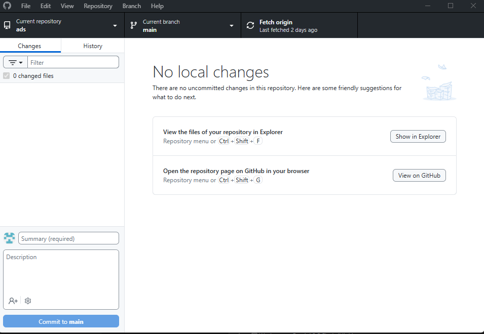
ওপরের বাম কোণায় File মেনু থেকে Add local repository... অপশনে ক্লিক করুন। তাহলে নিচের মতো পপআপ আসবে।
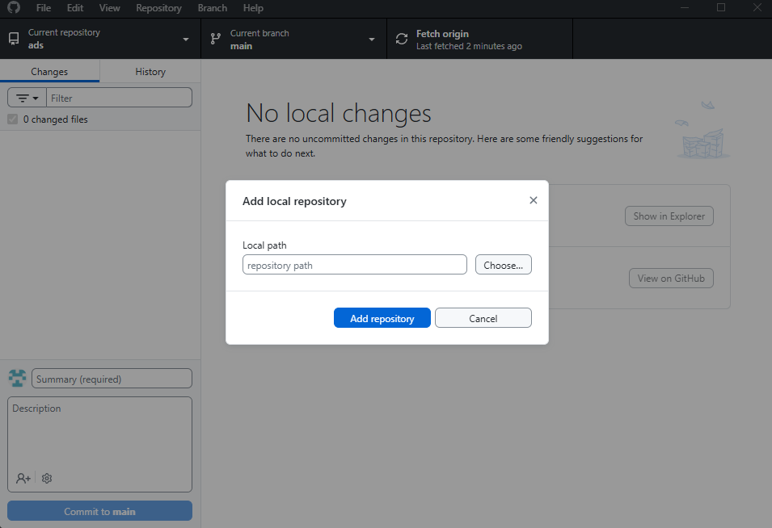
Choose... বাটনে ক্লিক করে আপনার ড্রাইভ থেকে প্রজেক্ট ফোল্ডারটি D:\softare\display Adds সিলেক্ট করুন।
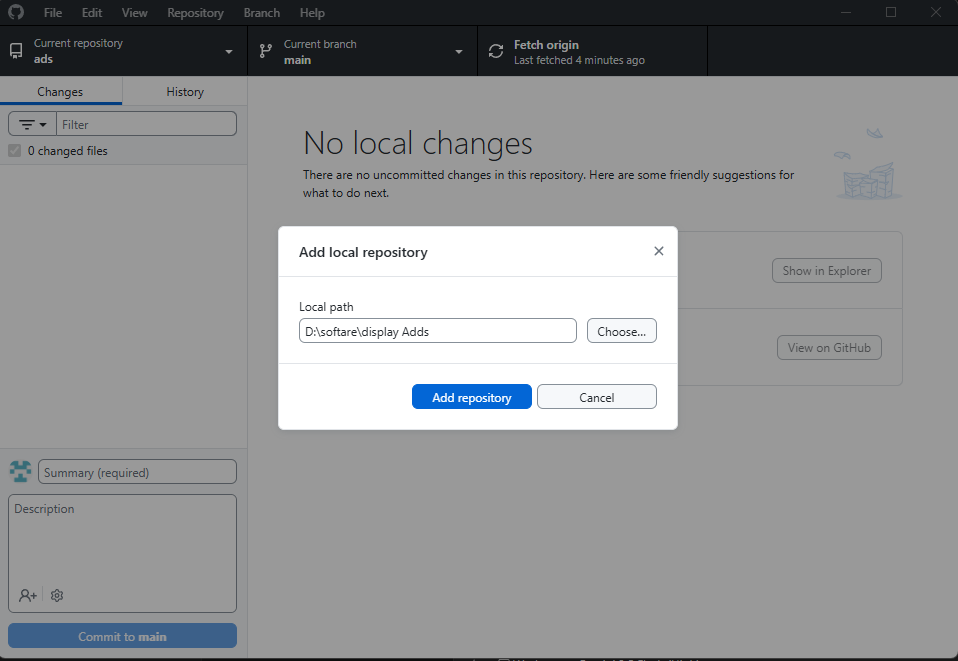
যেহেতু প্রজেক্টটি আগে কখনো গিটহাবে আপলোড করা হয়নি, তাই লাল বর্ডারে একটি সতর্কবার্তা দেখাবে। সেখানে থাকা নীল রঙের create a repository লিঙ্কে ক্লিক করুন।
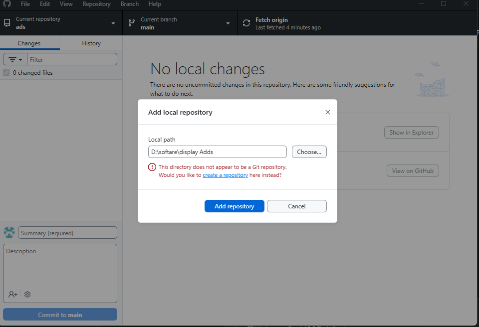
রিপোজিটরি তৈরির ফর্মে প্রজেক্টের নাম দিন এবং **Git ignore** ড্রপডাউন মেনু থেকে **Node** সিলেক্ট করুন। এর ফলে ভারী ও অপ্রয়োজনীয় ফোল্ডারগুলো গিটহাবে আপলোড হবে না। এরপর **Create repository**-তে ক্লিক করুন।
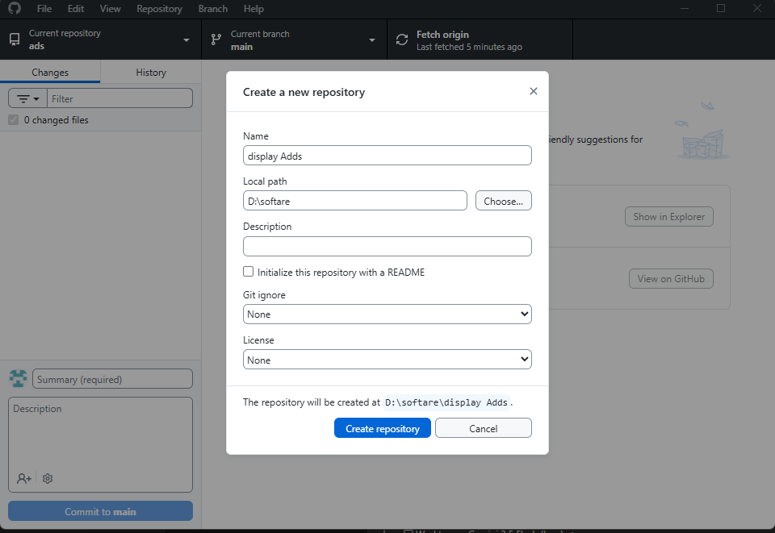
রিপোজিটরি ক্রিয়েট হওয়ার পর স্ক্রিনের মাঝখানে নীল রঙের **Publish repository** বাটনটি চলে আসবে। সেটিতে ক্লিক করুন।
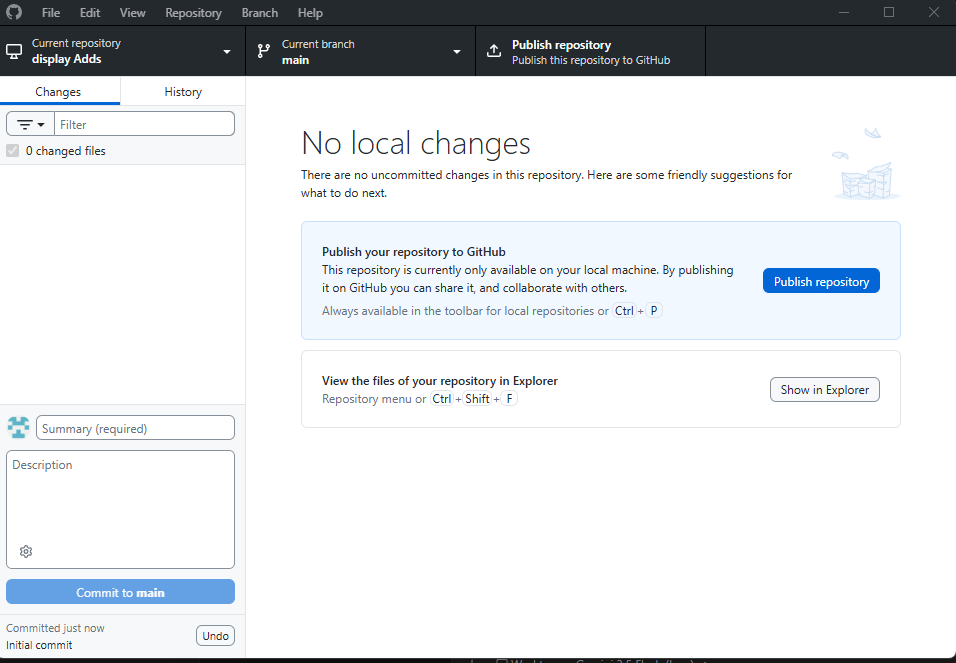
এখানে সবচেয়ে গুরুত্বপূর্ণ কাজ হলো **Keep this code private** লেখার পাশে থাকা নীল রঙের टिक চিহ্নটি **তুলে দেওয়া (আনচেক করা)**। এর ফলে প্রজেক্টটি লাইভ হোস্ট করা যাবে। এরপর **Publish repository** বাটনে ক্লিক করুন।
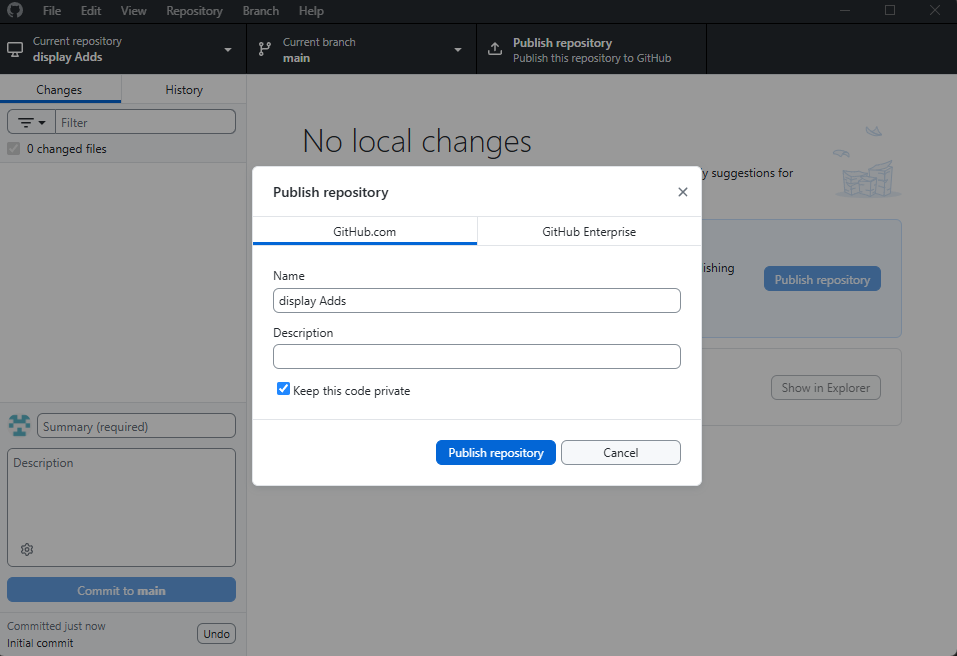
গিটহাবের কোডটি স্বয়ংক্রিয়ভাবে একটি লাইভ ওয়েবসাইটে রূপান্তর করার নিয়ম নিচে দেওয়া হলো:
Vercel.com-এ গিয়ে গিটহাব দিয়ে লগইন করুন। এরপর প্ল্যান সিলেক্ট করার স্ক্রিনে অবশ্যই **I'm working on personal projects (Hobby)** সিলেক্ট করে **Continue** বাটনে ক্লিক করুন।
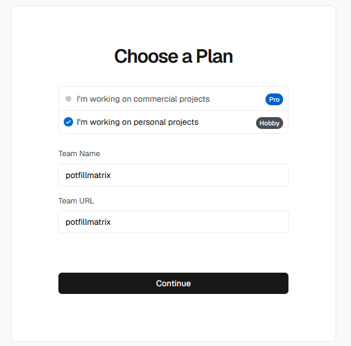
নতুন প্রজেক্ট তৈরি করার পেজে গিয়ে বাঁদিকের **Import Git Repository** এর নিচে থাকা কালো রঙের **Continue with GitHub** বাটনে ক্লিক করুন।
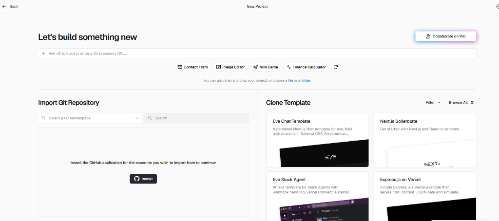
গিটহাবের অথরাইজেশন পেজে সবুজ রঙের **Install** বাটনে ক্লিক করে Vercel-কে আপনার প্রজেক্ট রিড করার পারমিশন দিন।
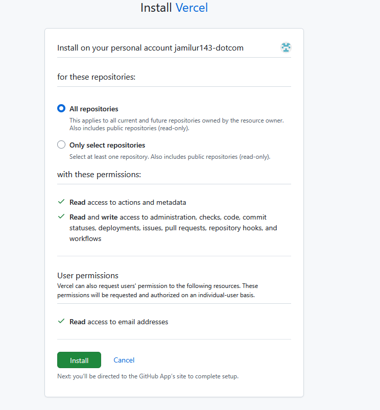
পারমিশন দেওয়া হয়ে গেলে প্রজেক্ট লিস্টে আপনার তৈরি করা **display-Adds** রিপোজিটরিটি দেখতে পাবেন। সেটির পাশে থাকা কালো রঙের **Import** বাটনে ক্লিক করুন।
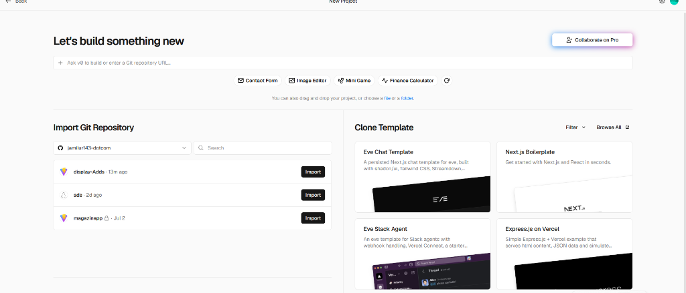
কনফিগারেশন পেজে google analytics, build command ইত্যাদি সবকিছু ডিফল্ট রেখে সরাসরি নিচে থাকা কালো রঙের **Deploy** বাটনে ক্লিক করুন।
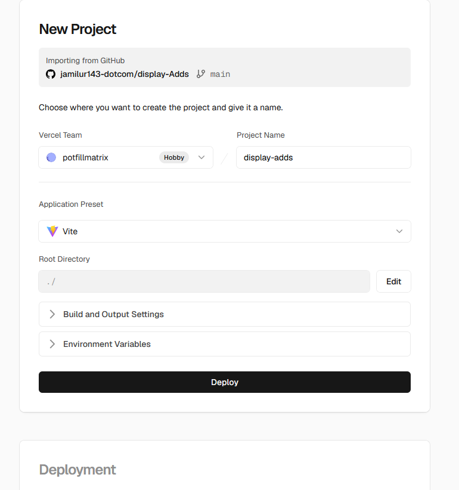
বিল্ড প্রসেস শেষ হলে স্ক্রিনে কনগ্রাচুলেশন অ্যানিমেশন দেখাবে। প্রজেক্টের ওপর ক্লিক করলেই আপনি আপনার সাইটের লাইভ ডোমেইন লিঙ্কটি পেয়ে যাবেন।
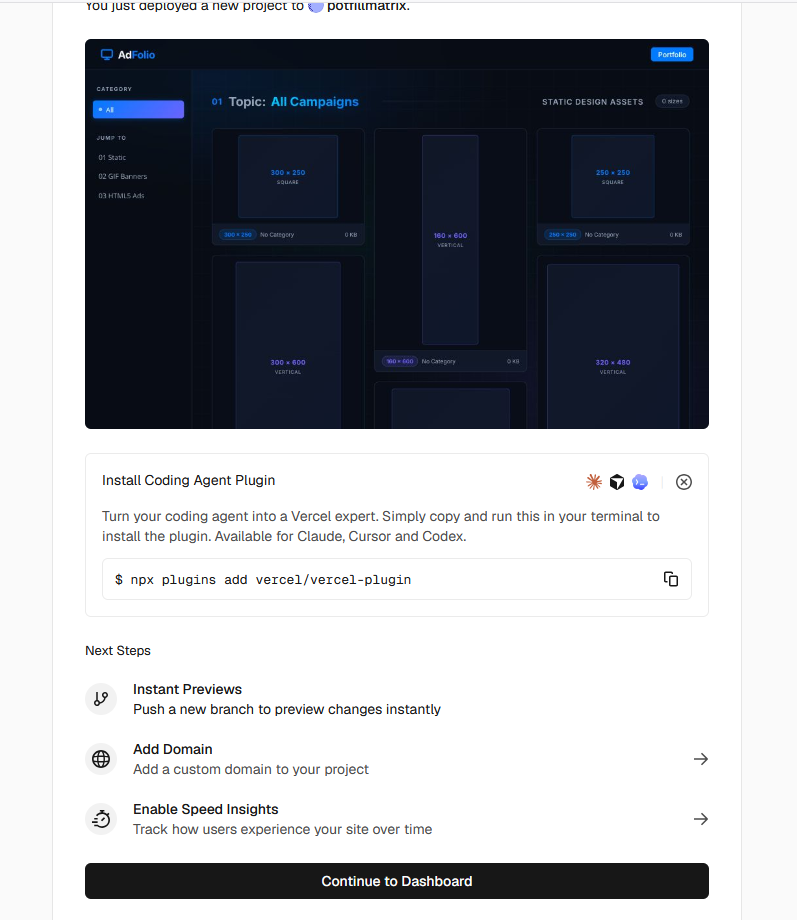
রিয়েল-টাইম তথ্য সিঙ্কের জন্য ফায়ারবেস ডাটাবেস কনফিগারেশন করার নিয়ম নিচে দেওয়া হলো:
Firebase Console-এ গিয়ে **Add project** এ ক্লিক করার পর প্রজেক্টের নাম লিখুন **`display-adds`** এবং প্রজেক্ট ক্রিয়েট করে এগিয়ে যান।
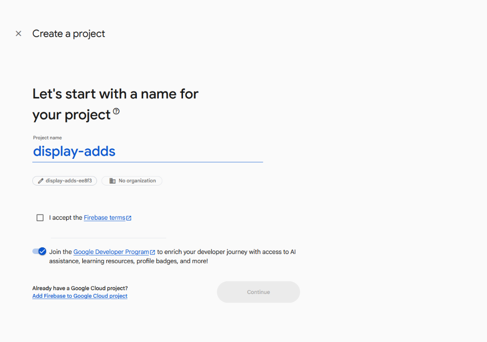
প্রজেক্টের হোমপেজ থেকে বাঁদিকের মেনুতে থাকা **Databases & Storage** অপশনটির ওপর ক্লিক করে মেনুটি বড় করুন।
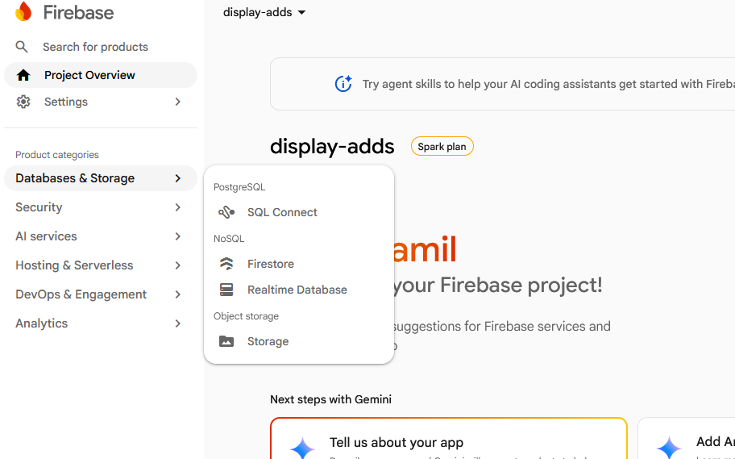
মেনু থেকে **NoSQL** সেকশনের নিচে থাকা **Firestore** অপশনটির ওপর ক্লিক করুন।
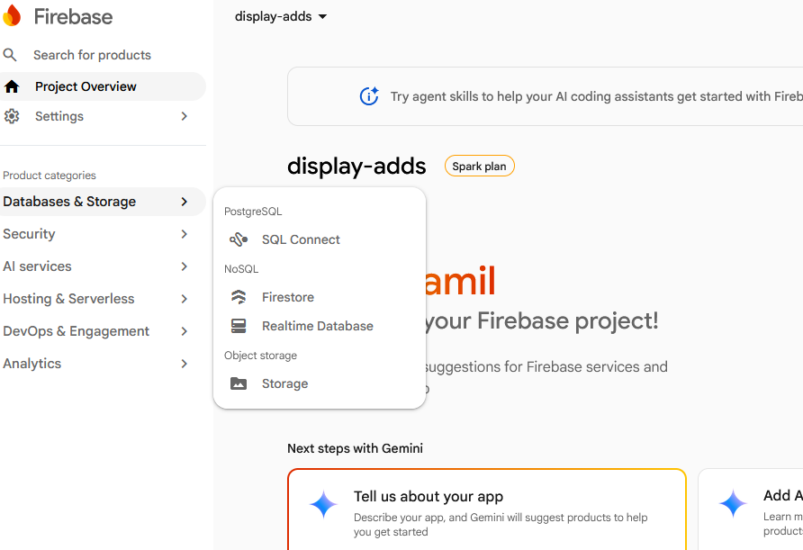
Firestore-এর পরিচিতি পেজ লোড হলে সেখানে থাকা কমলা বর্ডারের **Create database** বাটনটিতে ক্লিক করুন।
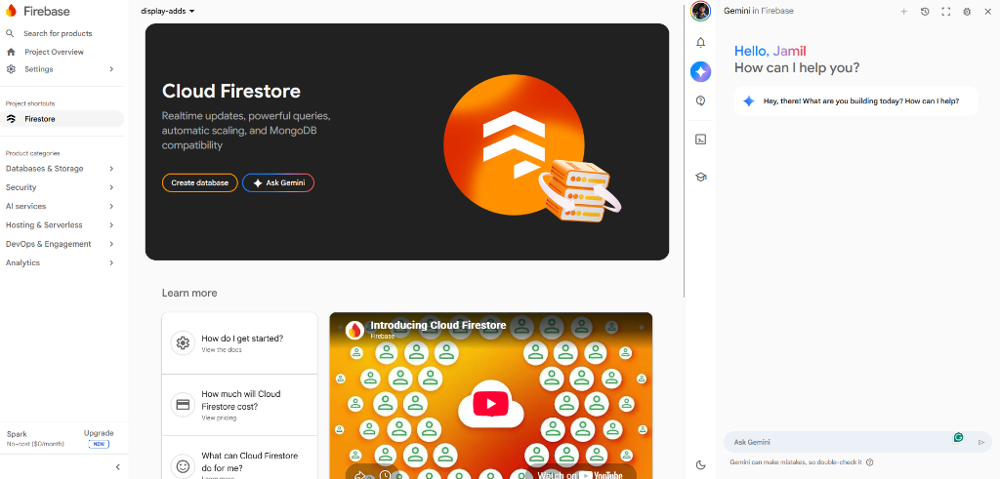
ডেটাবেসের প্রথম স্টেপে **Standard edition** সিলেক্ট করা অবস্থায় সরাসরি নিচে থাকা নীল রঙের **Next** বাটনে ক্লিক করুন।
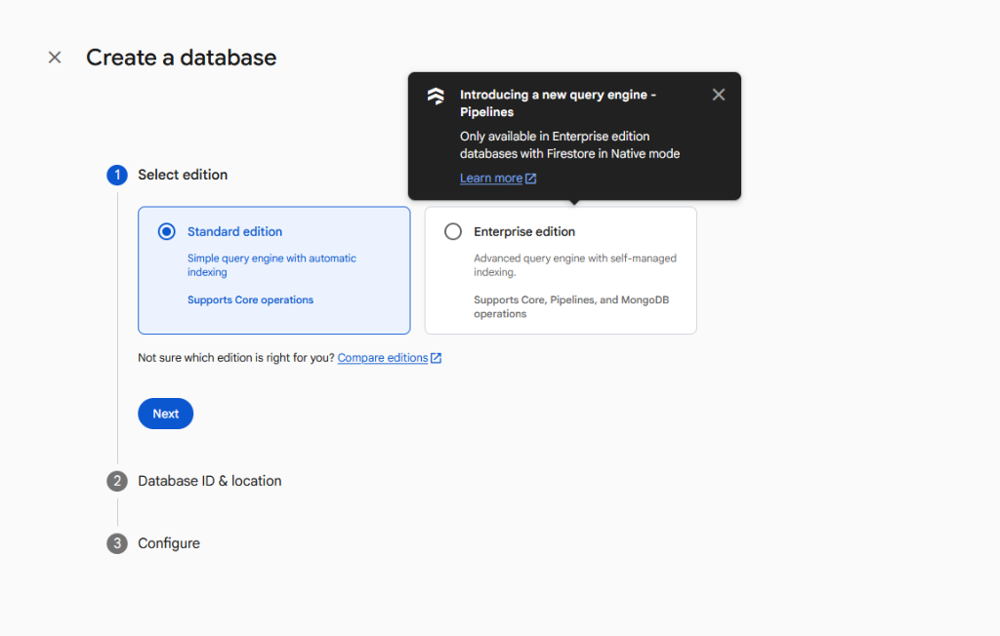
পরের পেজে লোকেশনটি ডিফল্ট **nam5 (United States)** রেখে সরাসরি নিচে থাকা নীল রঙের **Next** বাটনে ক্লিক করুন।
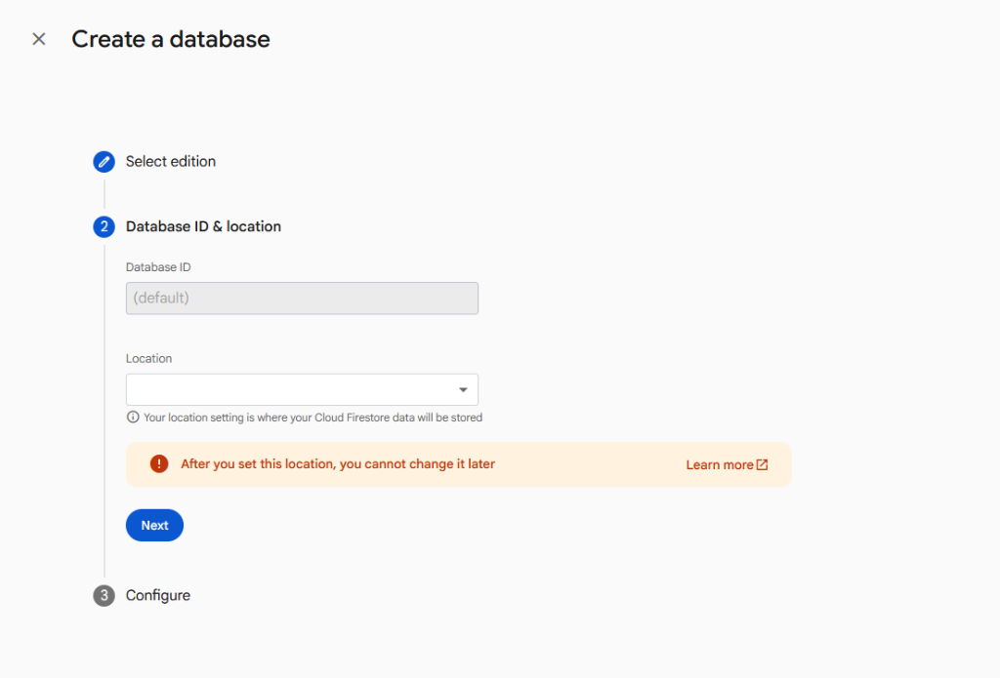
লোকাল অ্যাপ থেকে ফায়ারবেসে সরাসরি ডাটা রিড ও রাইট করার জন্য দ্বিতীয় অপশন অর্থাৎ **Start in test mode** সিলেক্ট করুন এবং নিচে থাকা **Create** বাটনটি ক্লিক করুন।
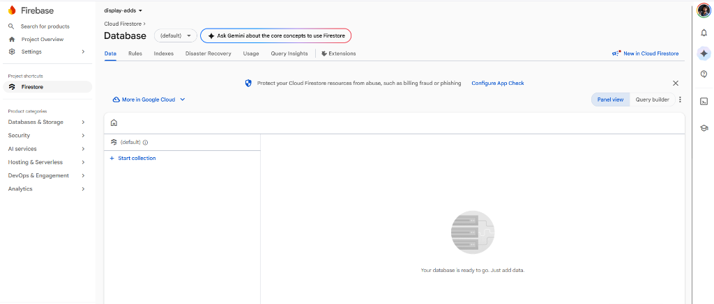
লোডিং প্রসেস শেষ হলে আপনার ফায়ারস্টোর ডেটাবেস প্রস্তুত হয়ে স্ক্রিনে ড্যাশবোর্ড দেখাবে।
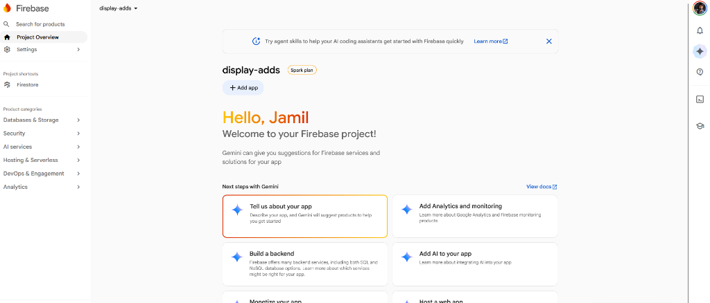
এবার Project Overview পেজে ফিরে গিয়ে প্রজেক্টের নামের নিচে থাকা গোল আইকনগুলোর মধ্যে থেকে ওয়েব ডেপ্লয়মেন্টের জন্য **``** আইকনটিতে ক্লিক করুন।
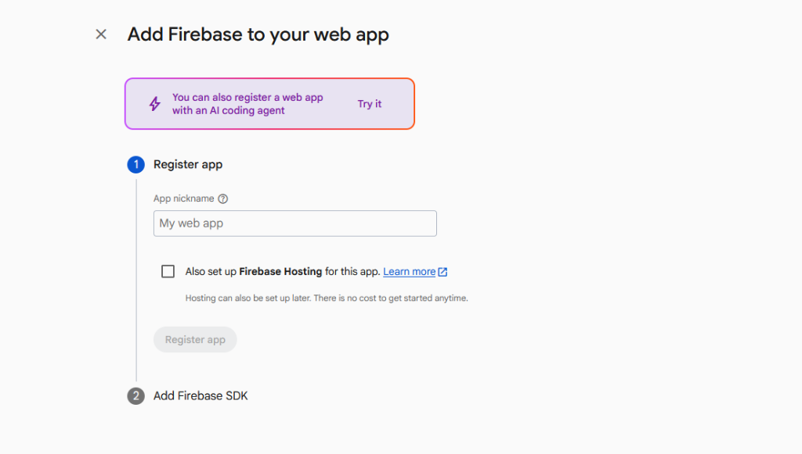
ওয়েব অ্যাপের একটি নাম দিয়ে অ্যাপটি রেজিস্টার করলেই আপনার সামনে ফায়ারবেস কনফিগারেশনের কোড চলে আসবে।
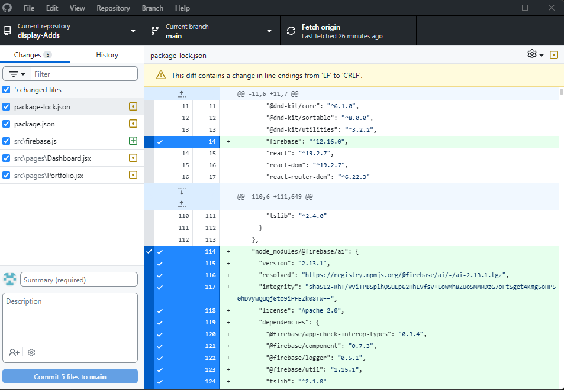
💡 ফায়ারবেসের সমস্ত কনফিগারেশন কী এবং কানেকশন কোড ইতিমধ্যেই প্রজেক্টের src/firebase.js ফাইলের ভেতরে ইন্টিগ্রেট করে দেওয়া হয়েছে। গিটহাব ডেস্কটপের মাধ্যমে এটি পুশ করার কারণে এই সেটআপটি স্বয়ংক্রিয়ভাবে সক্রিয় হয়ে গেছে।